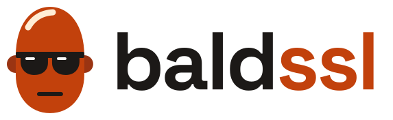

baldssl


A reimplementation of the openssl
command-line tool in Rust, with no third-party dependencies. The
goal is the same arguments and the same output bytes as OpenSSL,
starting with what is needed to run a certificate authority.
What it is
No third-party dependencies
Base64, PEM, DER, SHA-1 and SHA-2 and argument parsing are implemented in the repository. CI fails if any external crate reaches the build.
OpenSSL-exact output
Output matches OpenSSL 3.5 and 4.1 byte for byte. Inputs baldssl cannot yet print exactly are rejected as unsupported.
Tested against OpenSSL
Golden files, live differential tests against OpenSSL builds in both directions, property tests, fuzzing and mutation testing.
Portable
Tested on Linux, macOS and Windows on x86_64 and aarch64, and on 32-bit ARM (Raspberry Pi), riscv64 and 32-bit x86, and as WebAssembly.
The parsers are written in the Rust subset that Aeneas extracts to Lean 4, the route to their formal verification.
Compatibility
OpenSSL 3.x and 4.x print
-text
differently (hex dump widths, the RSA modulus sign byte, the EC
key header). baldssl reproduces either; the profile is selected
with an environment variable, so scripts that call
openssl need no
new flags.
OpenSSL 3.x layout (the default):
OpenSSL 4.x layout:
Supported and checked against real OpenSSL builds in CI: OpenSSL
3.5.9 (profile 3, the default) and 4.1.0 (profile 4), and
OpenSSL 3.0.22 with
BALDSSL_OPENSSL_COMPAT=3.0, whose names use the older escaped style.
Intentional differences
-
-fingerprintdefaults to SHA-256 (OpenSSL: SHA-1); pass-sha1for OpenSSL's output.-fingerprint sha384is accepted as well as-fingerprint -sha384. - Exit codes: 0 on success, 1 on any error, 2 when an input file does not exist (OpenSSL exits with 1 for both errors).
- Serial numbers follow the LP64 layout of Linux and macOS. OpenSSL on Windows prints serials of 5 to 8 bytes in hex form instead.
Supported keys
x509 -text
prints P-256, P-384, P-521 and Ed25519 keys, and RSA keys for
display. Other key types are rejected with an
unsupported
error rather than printed differently from OpenSSL.
Common tasks
The OpenSSL commands most people need, with what each one does. Run
them in order in an empty directory: later tasks use the files
earlier ones create. Where baldssl supports a task, the same command
works with baldssl in
place of openssl,
with identical output; the switch shows the commands for either. CI
runs every command on this page against OpenSSL 3.5 and 4.1, and the
supported ones with baldssl too.
Building blocks
The primitives baldssl is built from, all implemented in the repository without third-party code. Each is added by its own pull request, which updates this table.
| Primitive | Status |
|---|
Engineering practices
What the project does, and what checks each practice.
Platforms
The systems baldssl's randomness is tested on in CI, with every version. The list is the one CI runs: both read the same file. A version below a minimum is tested too, and must fail to link.
| Platform | Versions tested |
|---|
Commands
Every command of OpenSSL 3.5 and 4.1, with the description from OpenSSL's manual pages, and its status in baldssl.
Standard commands ()
| Command | Description | OpenSSL | baldssl | Notes |
|---|
Message digest commands
| Command | Description | baldssl |
|---|
Cipher commands
| Command | Description | baldssl |
|---|